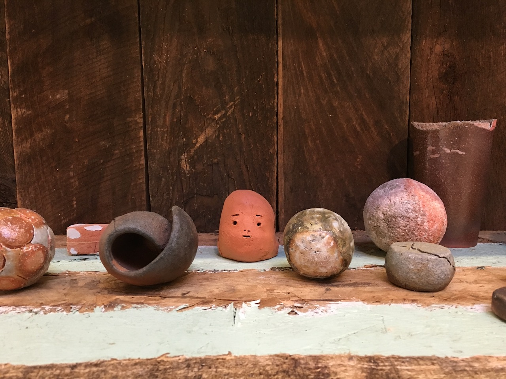

Fire leaves its soul where it steps
clinging to its spent fuel
shadows in its wake as it follows
its hunger and the dry wind
what follows fire but us
and flowers that dot the charred earth
after long slumbering in the soil
sprouting only at the scent of smoke